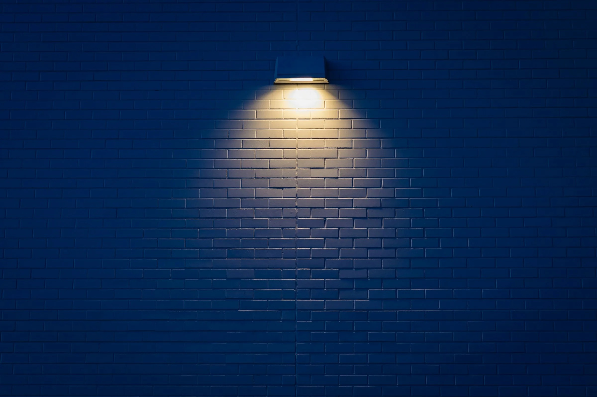
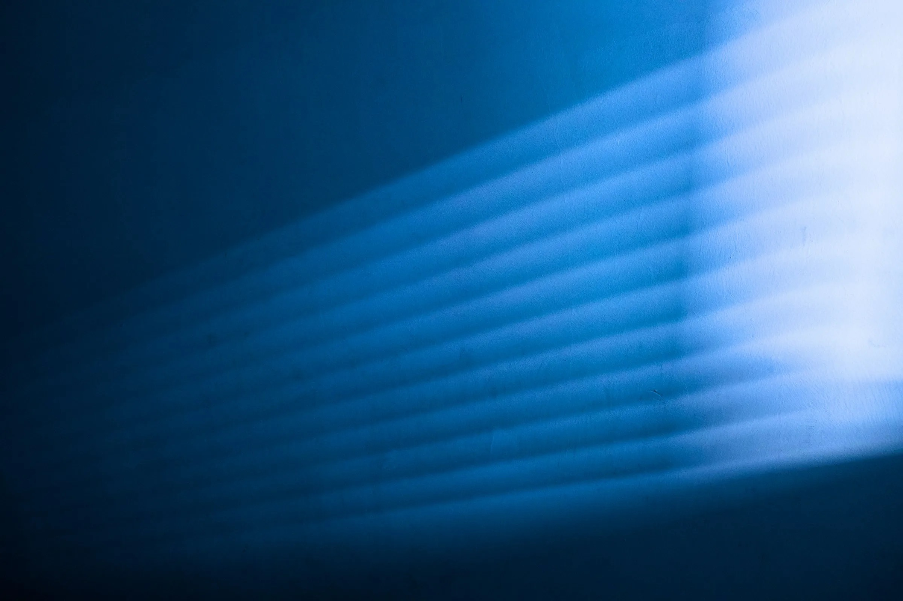
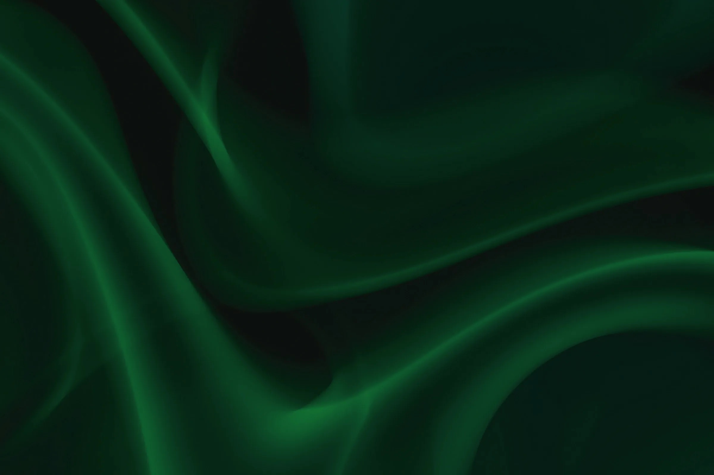

Live
NewLight's first online store
Production live · Arabic + English · Full checkout
Selected work
Production builds you can inspect today, plus how we engineered this site as a live reference.

Production live · Arabic + English · Full checkout

95+ Lighthouse · High-res zoom · Inventory synced live
The third build is this site.
See all workSelected work
Each build is live. Open it, test it on your phone, then read how it was made.
A custom e-commerce platform that matches the brand and supports buying in Arabic and English on every device.
Production live · Arabic + English · Full checkout
A showroom business with no way to sell online without losing the brand's premium feel.
A custom store, a product system the team runs itself, a structured checkout, two languages.
Launched on custom architecture; the team manages the catalog day to day.
StackNext.js · next-intl · Tailwind · PWA · PostgreSQL
High-resolution product imagery at scale, live inventory and fast pages for a premium lighting retailer.
95+ Lighthouse · High-res zoom · Inventory synced live
The old platform compressed images and loaded slowly; inventory lived in several systems.
A Next.js storefront with an image pipeline tuned for zoom; inventory synced into one source.
A production storefront the client team operates without engineering support.
StackNext.js · TypeScript · Tailwind · PostgreSQL · image pipeline

A bilingual build made to show technical quality, native RTL and lead qualification before the first call.
Mobile TTI < 1s · RTL switch < 16ms · Leads arrive pre-qualified
In a market that competes on price, the site had to prove quality without borrowed credibility.
A custom Next.js stack with native RTL and a transparency flow that qualifies leads.
Sub-1s mobile TTI, RTL switch with zero layout shift, leads that arrive with scope mapped.
StackNext.js 16 · TypeScript · Tailwind v4 · GSAP · next-intl · Prisma
The next entry is unwritten.